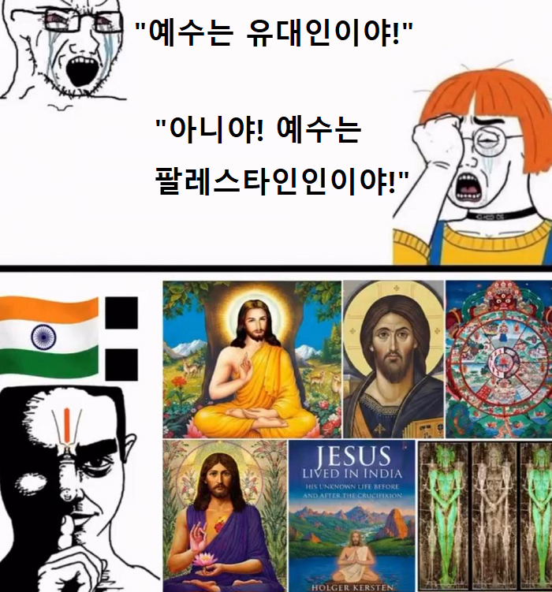

왜 사람임? 예수는 신 아니였음? 병신인가? ㅋㅋㅋ
예수 고구려 사람임 내가 봄
아 이런건 개독한테 반박할 먹잇감만 된다고 ㅋㅋ
예수는 사람 하나님이 신임
신의 아들은 신이 아닌건가?
신이 자신의 뜻을 직접 전하기 위해 자신의 아들에게 사람의 몸을 주고 인간세상에 내려보낸 게 예수라는 게 기독교의 세계관
사람 몸에 들어간 신은 신 아닌가? 진짜 몰라서
개신교 : 예수는 신이다.
카톨릭, 이슬람 : 예수는 신이 아니다.
으로 알고 있음
ㄴ
기독교 : 예수는 하느님 아들=신급
이슬람교 : ㄴㄴ 예수는 쩌는 선지자 중 하나
유대교 : ㄴㄴㄴㄴ 예수는 존나 사기꾼
이거로 알고 있음
인간이면서 신인거지 뭐
약간 헤라클레스 같은거 아님?
당장에 그리스로마신화만해도 아버지가 신인 인간들이 부지기수임
갈! 예수는 환국 사람이다 이는 고구려 수박도와 환단고기에도 나와있는 사실이다
뭐야? ㅅㅂ 예수 외노자였어?
예수는 외계인이다
여수 사람임
예수는 부처의 제자임
역시 닮은 구석이 있어
내가 무슨 예수가 아직살아있는 영화봤는데 이게마따
이왕 이렇게 된거 단군이랑 동일 인물이라고 주장해보자
환인=하느님
환웅=예수
동방박사 =풍백, 우사, 운사
유대인이 죽인거 아님?
예수가 십자가 지고 춤추는 영화 안나오나
소설 설정가지고 전쟁도 하고 땅따먹기도 하고
컨텐츠 끝도없이 나옴
얼마전에 오디세이 봤는데 예수랑 제우스랑은 상관 없나
깨달았구나 맨프럼어스를 보자
예수게이 몽골사람임
예수에게 국적이나 민족성같은 현대적인 개념을 들이밀자면... 그냥 그 나라 현지 교회 따라감. 북유럽 루터교회는 금발벽안의 예수, 동유럽은 갈발회안의 예수, 이집트에서는 갈색 피부의 예수, 에티오피아에서는 커피색 피부에 아프로머리를 한 예수, 청나라시대 장삼을 두르고 신발을 신고 변발을 한 예수, 그리고 조선시대 갓을 쓴 예수까지.. 다양함.
예수: 네 이웃을 네 몸과 같이 사랑하라
단군: 널리 인간을 이롭게 하라
사실 단군과 예수는 동일인물이 아닐까?
라는 소리하면 이단이 되니 농담으로만 듣도록하자
예수는 곰박이였구나!
곰박이는 환웅...
아 맞네 미안
그럼 곰박이 자식이었구나!
근데 하늘에서 내려온 신의 아들은 환웅이니까 환웅=예수인가? 그렇게 되면 예수는 곰박이가 맞는건가?
If...! 환웅과 예수가 동일인물이고 곰박이라면... 삼위일체론에 의해 하나님도 곰박이가 되는건가?
역사적 예수는 유대민족 로마제국 유대속주 거주 아람어 구사자인데
예수 창녀자식새끼 아님?
인종 막론하고 모든 인종의 좆물들 사이에서 태어난 조화로운자임
사이아인임
왜 한국인 아님?
예수는 수인임
고려인 아님?